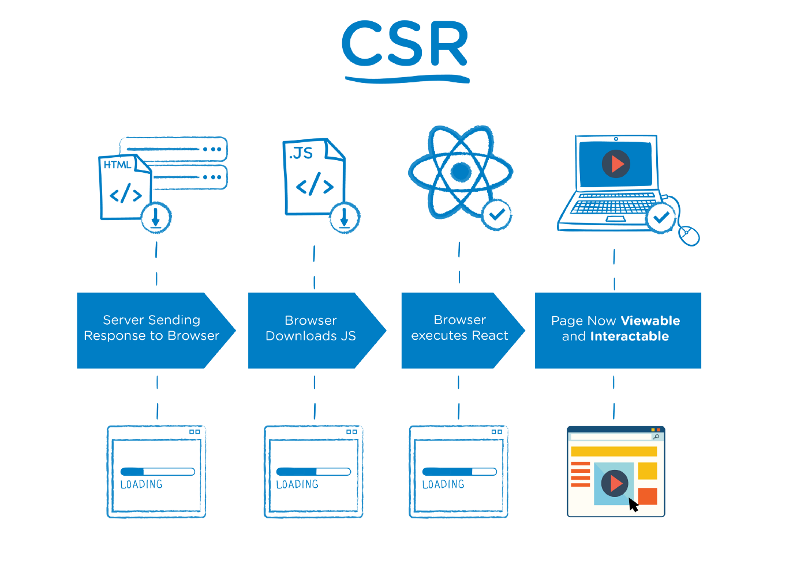

SSR & CSR
1. SSR
SSR(Server Side Rendering)은 웹 페이지를 브라우저에서 렌더링하는 대신에 서버에서 렌더링하는 것을 말한다.

브라우저가 서버의 URI로 요청을 보내면 서버는 정해진 웹 페이지 파일을 브라우저로 전송하고 서버의 웹 페이지가 브라우저에 도착하면 완전히 렌더링 된다.
서버에서 웹 페이지를 브라우저로 보내기 전에 서버에서 완전히 렌더링했기 때문에 SSR이라고 한다.
Use SSR
SEO(Search Engine Optimiztion)가 우선순위인 경우 일반적으로 SSR을 사용한다.
웹 페이지의 첫 화면 렌더링이 빠르게 필요한 경우 단일 파일의 용량이 작은 SSR이 적합하다.
웹 페이지가 사용자와 상호작용이 적은 경우 CSR보다 SSR이 적합하다.
2. CSR
CSR(Client Side Rendering)은 SSR과 반대로 웹 페이지를 서버에서 렌더링하는 대신에 클라이언트에서 페이지를 렌더링하는 것을 말한다.
웹 개발에서 사용하는 대표적인 클라이언트는 웹 브라우저이다.

브라우저의 요청을 서버로 보내면 서버는 웹 페이지를 렌더링하는 대신 웹 페이지의 골격이 될 단일 페이지를 클라이언트에 보낸다.
이때 서버는 웹 페이지와 함께 JS파일을 보낸다.
클라이언트가 웹 페이지를 받으면 웹 페이지와 함께 전달된 JS파일은 브라우저에서 웹 페이지를 완전히 렌더링 된 페이지로 바꾼다.
Use CSR
SEO(Search Engine Optimiztion)가 우선순위가 아닌 경우 일반적으로 CSR을 사용한다.
사이트에 풍부한 상호 작용이 있는 경우 CSR은 빠른 라우팅으로 강력한 사용자 경험(빠른 동적 렌더링 등)을 제공한다.